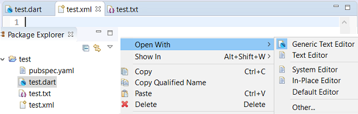
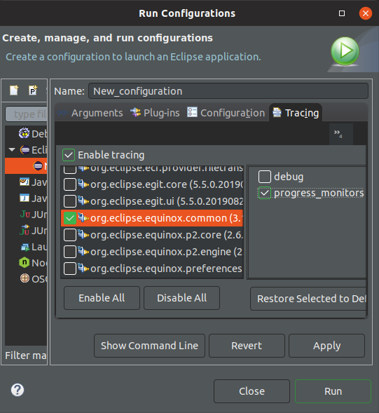
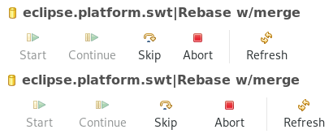
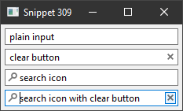
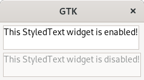
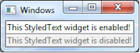
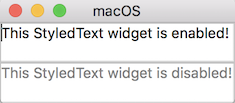
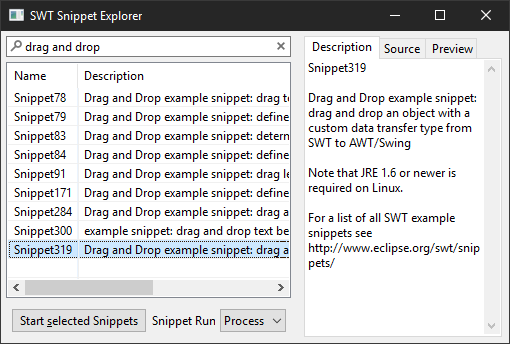

Here are descriptions of some of the changes of interest to plug-in developers made to the Eclipse Platform and SWT for the 4.13 release of Eclipse.
New features oriented towards end-users of the platform can be viewed in the What's New section of the Workbench User Guide.
Platform Changes |
|
| Content-type-specific icons in generic editor |
An extension was added to the generic editor so that it now can provide icons for content-type. See extension point org.eclipse.ui.genericeditor.icons for more details.
 |
| Multiline Support for StringFieldEditor |
The implementation of StringFieldEditor now provides the option to use a multi-line Text widget, suitable
for editing larger String values in a preference page.
|
| API to compute Quick Access proposals according to user input |
An extension interface org.eclipse.ui.quickaccess.IQuickAccessComputerExtension to use as extension to
org.eclipse.ui.quickaccess.IQuickAccessComputer when using extension point org.eclipse.ui.quickaccess/computer
was added. This provides the ability to compute a new extra set of proposals whenever filter change.
|
| Bundle org.eclipse.core.runtime no longer reexports javax.inject |
The org.eclipse.core.runtime bundle had javax.inject as an optional dependency, which it
previously reexported, but not anymore.
Technically, it's not a breaking change as
Clients have to |
| E4XMIResource optionally filters Transient UI Elements |
When using the E4XMIResource directly, transient UI elements are no longer filtered by default.
Note that transient UI elements are filtered by default when saved from the application.
To filter transient UI elements, call the save method with the new option
|
| Simplified Platform logging API |
Platform provides convenient logging API, Platform.getLog(Class) which can be used to access the log for the bundle to which the class belongs.
|
| Tracing option for correct progress reporting usage |
Earlier releases added support for tracing the correct usage of progress monitors. Unfortunately, this was missed while documenting in previous noteworthy documents.
To enable this tracing, add  |
SWT Changes |
|
| New native implementation of ImageLoader on GTK |
The implementation of ImageLoader on GTK now uses the native GdkPixbuf API for image loading and saving.
Key highlights of the new ImageLoader on GTK:
|
| Reduced ToolItem padding on GTK |
A fix in ToolItem has greatly reduced the size of some toolbars on GTK.
Previously, all EGit's Rebase Interactive view is a good example of this fix. In the following screenshot, the toolbar shown on top has the fix applied, compared to the larger, unpatched toolbar on the bottom.  |
| Search/Cancel icons supported in Text widget on Windows |
The Text widget on Windows now supports displaying the search and cancel icons for SWT.ICON_SEARCH and SWT.ICON_CANCEL styles respectively.
With the Windows support added, these style APIs are now supported on all the three platforms and are no longer marked as a HINT.
 |
| API to query if current OS theme is dark |
A new method public static boolean Display.isSystemDarkTheme() is now available to query if the current OS theme has a dark appearance.
The method returns true if the current OS theme is dark, else it returns false.
|
| StyledText now supports a disabled look |
The StyledText widget now supports a disabled look on all platforms when StyledText.setEnabled(false) is called.
   |
| New color constants for disabled widgets |
Two new color constants are available in SWT, to match the colors used in disabled widgets. SWT.COLOR_TEXT_DISABLED_BACKGROUND matches the background color of a disabled text widget, and
SWT.COLOR_WIDGET_DISABLED_FOREGROUND matches the foreground color of a disabled widget.
|
| SWT Snippet Explorer |
The SWT Snippets project in the SWT repository now includes a simple application called SnippetExplorer which can list, search and launch single or
multiple snippets at once. It also shows the snippets description, source code and a preview image where applicable.
 |
| Input method switching on GTK |
Early versions of GTK3 allowed the input method to be changed at the application level. This
functionality has been deprecated for quite some time, and has now been removed from SWT.
To change the input method, please use the global input method settings available in the desktop environment. |
JFace Changes |
|
| New ColumnViewerEditor tab traversal added |
Tabbing to the start or end of a viewer (during an inline edit) is
now possible by passing
ColumnViewerEditor.TABBING_CYCLE_IN_VIEWER as a feature when calling
TableViewerEditor.create(viewer,
editorActivationStrategy, feature) or TreeViewerEditor.create(viewer, editorActivationStrategy,
feature).
With this new feature flag enabled:
|